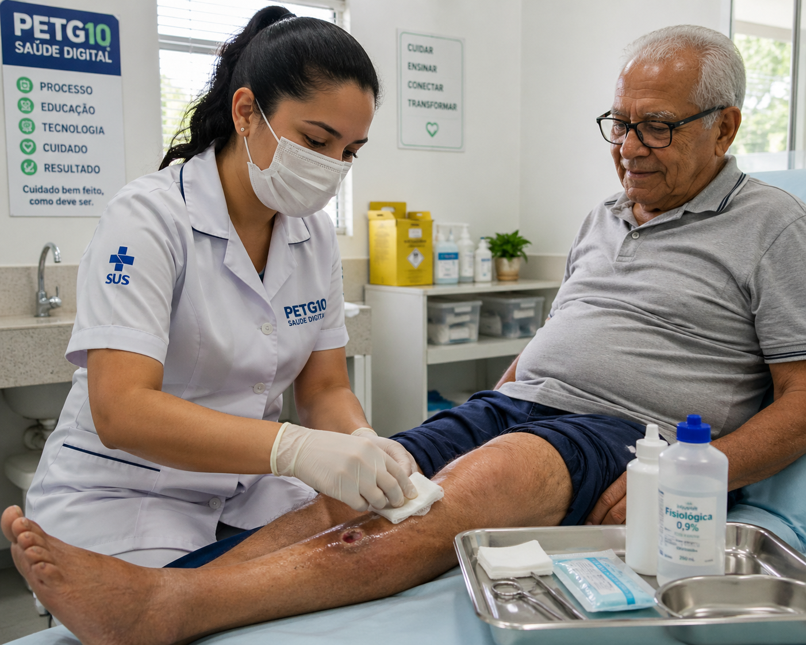

![Logos Amor-à-Pele e PET-Saúde Digital – UFPel]()
📜 O outro Pitágoras
Muito além do a² + b² = c²
Todo mundo aprendeu o teorema na escola. Mas Pitágoras de Samos (c. 570–495 a.C.) era muito mais do que um matemático: era filósofo, médico, líder espiritual e fundador de uma escola de vida. Para os pitagóricos, números e harmonia eram os alicerces do universo — e essa harmonia devia existir também dentro de cada ser humano.
"Não faça do seu corpo a tumba da sua alma."— Pitágoras de Samos, século V a.C.
Essa frase resume uma cosmologia inteira. Para Pitágoras, a alma era o elemento essencial e imortal — ela poderia inclusive migrar para outros corpos após a morte (metempsicose). Mas isso não significava desprezar o corpo: significava que o corpo precisava estar em harmonia com a alma, e não sufocá-la.

📅 Linha do tempo
A vida de um filósofo do equilíbrio
c. 570 a.C.
Nascimento em Samos, Grécia
Filho de comerciante, viajou pelo Egito e Babilônia absorvendo matemática, astronomia e medicina.
c. 530 a.C.
Funda a escola em Crotona, Itália
Comunidade filosófica com regras de vida: dieta, silêncio, música, exercício físico e meditação.
c. 500 a.C.
Influência sobre Platão e medicina grega
Suas ideias sobre equilíbrio dos humores influenciaram Hipócrates e toda a medicina ocidental clássica.
c. 495 a.C.
Morte — e legado eterno
Seus ensinamentos sobrevivem em Platão, no neoplatonismo e, hoje, nas ciências da saúde integrativa.
⚖️ A filosofia
Os três pilares do pensamento pitagórico sobre saúde
Harmonia
Assim como a música só existe quando as notas se equilibram, a saúde existe quando corpo e alma trabalham juntos, não contra si mesmos.
Proporção
O excesso e a falta são igualmente perigosos. A vida boa está no meio — no que os gregos chamavam de mesotes, o equilíbrio justo.
Continuidade
A alma não morre com o corpo. Cuidar do corpo é, portanto, cuidar do veículo da alma — uma responsabilidade, não uma vaidade.
Na comunidade pitagórica, os membros tinham rotina rigorosa: alimentação vegetariana, prática de música diária, caminhadas, reflexão matinal e noturna. Eles entendiam que descuido do corpo era, ao mesmo tempo, descuido da mente e do espírito.
🩹 Da filosofia ao cuidado
O que Pitágoras tem a dizer sobre feridas crônicas?
🔗 A conexão que o projeto G10 enxerga
Uma ferida crônica — como úlceras por pressão, pé diabético, lesões venosas — não é apenas uma lesão de pele. É um sinal de que algo no equilíbrio sistêmico foi rompido. Pitágoras nos lembra: o corpo fala quando a alma é silenciada, quando a rotina, o propósito e o cuidado são negligenciados.
Pessoas com feridas crônicas frequentemente enfrentam isolamento social, perda de autonomia, dor constante e depressão. O corpo literalmente torna-se um obstáculo — aquilo que Pitágoras chamava de "tumba da alma".
≥30%
dos pacientes com feridas crônicas apresentam sintomas depressivos ou ansiosos — chegando a ~40% nos casos de pé diabético*
OR 2,10
é o risco aumentado de atraso na cicatrização associado à depressão não tratada — o dobro da chance de complicações†
*Renner R, Erfurt-Berge C. Depression and quality of life in patients with chronic wounds. Chronic Wound Care Manag Res. 2017;4:143–151. DOI: 10.2147/CWCMR.S124917. Prevalência de ~40% em úlceras diabéticas: Udovichenko OV et al., 2017; Pedras S et al., 2018. †Riddle et al. Relationships between anxiety, depression and wound healing outcomes in adults: A systematic review and meta-analysis. PLOS ONE. 2025. DOI: 10.1371/journal.pone.0309683. OR=2,10 [IC95%: 1,02–4,33] para atraso na cicatrização; RR=1,30 [IC95%: 1,11–1,53] para complicações.

Para refletir na prática: A adesão ao tratamento de feridas crônicas — troca de curativos, controle glicêmico, mudança de decúbito — depende de motivação. E motivação está diretamente ligada ao senso de propósito e ao suporte social. Pitágoras tinha razão: cuidar da alma é parte do cuidar do corpo.
💡 Pitágoras nos dias de hoje
"Viver no automático" — a forma moderna de fazer do corpo uma tumba
Pitágoras diria que "viver no automático" — sem refletir sobre valores, propósito ou cuidado — é uma forma moderna de "enterrar" a própria essência. A rotina desconectada do que realmente importa transforma o dia a dia em algo vazio.
Para o paciente com ferida crônica, isso pode se manifestar como abandono do tratamento, descrença na melhora, isolamento social progressivo. Para o profissional de saúde, como burnout e perda do sentido do cuidar.
Teste seus conhecimentos
Clique na alternativa que você considera correta. O feedback aparece imediatamente.
1Para Pitágoras, qual era a principal função do corpo em relação à alma?
2O que significa, no contexto de feridas crônicas, a frase "não faça do seu corpo a tumba da sua alma"?
3Qual das seguintes práticas da comunidade pitagórica tem equivalente direto nas recomendações atuais para pacientes com feridas crônicas?
4No cuidado integral ao paciente com ferida crônica, o suporte emocional e social é considerado:
Resultado do Quiz
💭 Para aprofundar
Questões para reflexão
Clique em cada pergunta para expandir e aprofundar a reflexão — individual ou em grupo.
Como você reconhece no seu paciente os sinais de que o corpo "está se tornando uma tumba"?
▼Pense em pacientes que você acompanhou: quais sinais — além da ferida em si — indicavam sofrimento emocional ou perda de propósito? Abandono do tratamento, isolamento, choro frequente, relatos de "não ter mais vontade de nada"?
Como sua equipe respondeu a esses sinais? Havia espaço para acolher esse sofrimento, ou o foco era exclusivamente técnico?
O que é "harmonia" no contexto do cuidado com feridas crônicas?
▼Para Pitágoras, harmonia era o equilíbrio dinâmico entre opostos. No cuidado de feridas, isso pode se traduzir como: equilíbrio entre protocolo técnico e escuta humana, entre autonomia do paciente e orientação profissional, entre urgência clínica e respeito ao tempo emocional do paciente.
Você consegue identificar momentos em que esse equilíbrio foi rompido? O que aconteceu e o que poderia ter sido feito de forma diferente?
E você, profissional de saúde — seu corpo também está sendo uma tumba?
▼Pitágoras não falava apenas para os pacientes. O burnout entre profissionais de saúde é epidêmico. Quando a rotina do trabalho desgasta o propósito de cuidar, quando o profissional "funciona no automático" — isso também é o corpo se tornando uma barreira para a alma.
Quais hábitos de equilíbrio você cultiva? Sono, alimentação, vínculos sociais, momentos de reflexão? O que o projeto G10 pode fazer para apoiar o bem-estar da própria equipe?
A filosofia antiga pode informar o cuidado contemporâneo — ou é romantismo?
▼Existe um risco de usar a filosofia de forma superficial — como inspiração motivacional sem impacto real na prática. Como o pensamento de Pitágoras pode traduzir-se em mudanças concretas no protocolo de atendimento do G10?
Pense: incluir avaliação de qualidade de vida e suporte emocional como parte da consulta de feridas, treinar a equipe para escuta ativa, criar grupos de suporte para pacientes — são exemplos. Que outras ideias você propõe?
O que fica na cabeça
Pitágoras nos deu um teorema. Mas também nos deu algo mais valioso: o lembrete de que somos mais do que nosso corpo, e que esse corpo merece cuidado — não como fim em si mesmo, mas como condição para que a vida tenha sentido.
Para quem tem uma ferida crônica, esse cuidado é duplo: da pele e da alma. E para quem cuida, é triplo: do paciente, da equipe e de si mesmo.
"Nem desprezar o corpo, nem viver apenas para ele. A vida boa está no meio."